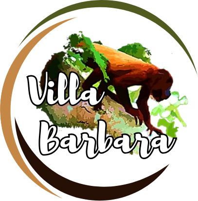
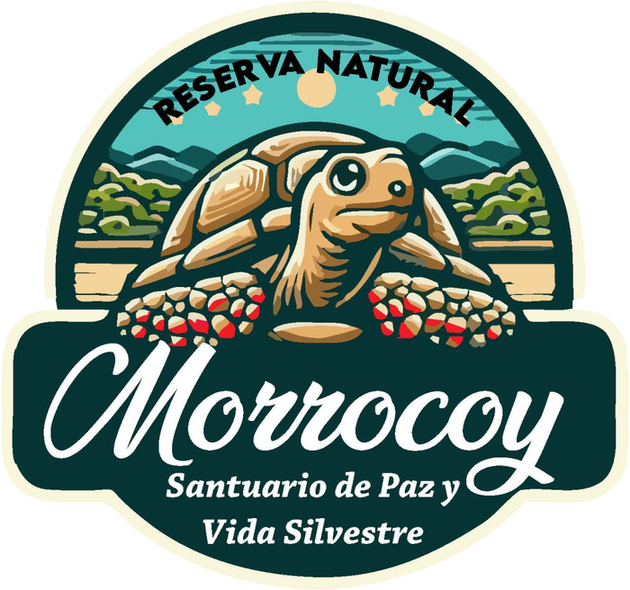

Inspiring Models
Sembrandopaz stewards two key spaces—the Experimental Farm Villa Bárbara and the Morrocoy Nature Reserve—where peacebuilding and environmental justice meet. These sites model sustainable agroecology in the Tropical Dry Forest while strengthening our core areas of Political Culture and Economy for Good Living. They offer spaces of healing, learning, and community building, showing that alternatives to extractive agricultural practices are possible.
Programs include School in the Forest for children, Ecological Protectors for youth, ecotourism activities, alternative agricultural production, and environmental education. By caring for nature, we also care for communities—this is the essence of cultivating peace.

Experimental Farm Villa Bárbara
The Villa Bárbara Experimental Farm is a 19-hectare agroecological space where Sembrandopaz demonstrates sustainable farming and conservation practices. Once a refuge for families displaced by armed conflict, it has evolved into an organic farm, training center, forest reserve, and art school. Since 2013, it has led efforts to restore the Tropical Dry Forest, protect water sources, and preserve native flora and fauna.
Through organic inputs, crop associations, and reforestation, Villa Bárbara models harmony between people and nature. It inspires farmers and visitors to practice agroecology, conserve biodiversity, and build peace rooted in respect for the land. By combining environmental education, art, and ecotourism, the farm serves as a sanctuary of peace and a living example of reconciliation, sustainability, and community.

Morrocoy Nature Reserve
The Morrocoy Nature Reserve in Cascajo, El Salado (Carmen de Bolívar), is where Sembrandopaz integrates ecological and restorative justice, healing conflict wounds while fostering sustainable development. In 2023, the Crecer en Paz Foundation gifted over 1,000 acres—mostly private nature reserve—to Sembrandopaz, which is committed to conserving and reforesting the Tropical Dry Forest, one of the world’s most endangered ecosystems.
Home to thousands of plant species and endangered wildlife such as the Cottontop Tamarin, the Reserve also includes San Pedrito, a 24-acre site with eco-tourism facilities and an environmental education center. Programs like School in the Forest and Ecological Youth Protectors teach children and youth to care for the forest, themselves, and their communities.
The war has also been violent to the environment and we must reconcile with her. There used to exist beautiful fauna and flora in the Alta Montaña, but due to the solitude that was lived as a result of the displacement, due to the bullets, due to the presence of armed groups, many birds died, many displaced. Without someone planting crops, the birds had nowhere to eat and they died, and so, the earth suffered a lot, the water sources suffered, and the trees also suffered.